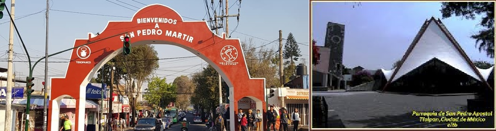

San Pedro märtir
Tomado de internet
Tomado de internet
Historia
Aparece mencionado dentro de la jurisdicción de San Agustín de las Cuevas desde 1532, durante los primeros años de la época colonial.
El nombre actual proviene de San Pedro de Verona, también conocido como San Pedro Mártir, santo al que fue dedicada la iglesia principal del pueblo.
Durante siglos fue una comunidad agrícola y forestal, dedicada al cultivo de la tierra y al aprovechamiento de los recursos de la zona serrana de Tlalpan.
Patrimonio
Su edificio histórico más importante es la Parroquia de San Pedro de Verona Mártir, construida por religiosos dominicos entre finales del siglo XVII y principios del XVIII. Conserva elementos arquitectónicos coloniales y una escultura de madera de San Pedro de Verona del siglo XVIII.
Tradiciones
La fiesta patronal se celebra cada 29 de abril en honor a San Pedro de Verona Mártir. Durante la festividad hay procesiones, danzas tradicionales, chinelos, música, jaripeos, feria popular y fuegos artificiales. Acuden peregrinos de otros pueblos originarios de la zona del Ajusco.
Actualidad
Aunque el crecimiento urbano de la Ciudad de México ha transformado gran parte de su entorno, San Pedro Mártir mantiene una identidad comunitaria fuerte como pueblo originario de Tlalpan. Continúan realizándose actividades culturales y comunitarias que buscan preservar su historia y tradiciones.
